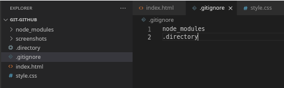
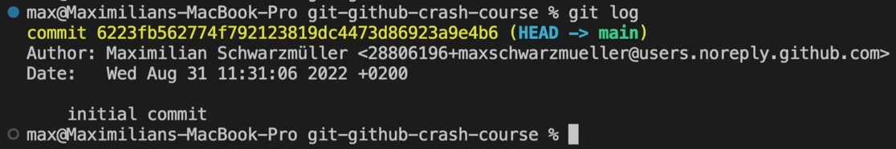
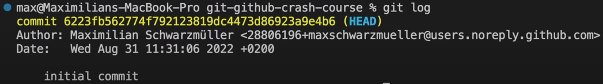
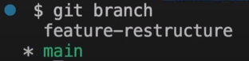
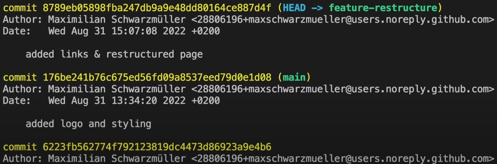
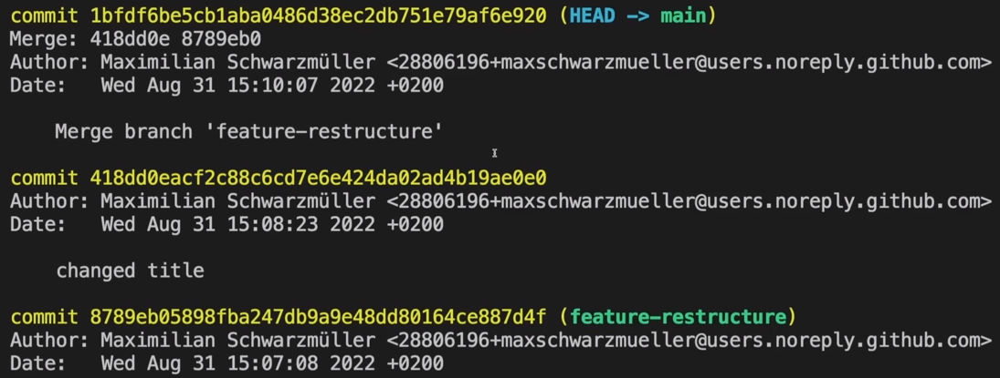

| Git commands | |
|---|---|
| sudo apt install git-all | Install Git on Linux |
| git | Get list of git command |
| git init | Initialise a Git repository in currently navigated directory |
| Working with commits | |
| git add <file_name> | Stage code changes |
| git rm --cached <file_name> | Unstage code changes |
| git commit -m "<message>" | Create a commit for the staged changes |
| git status | Displays current state of repository |
| git log | Displays the list of the commits for the current branch |
| git checkout <commit_ID> | Temporarily move back to commit |
| git revert <commit_ID> | Revert the changes of commit |
| git reset --hard <commit_ID> | Undo commit(s) up to commit with given ID by deleting commits |
| Working with branches | |
| git branch | Lists all the branches |
| git branch <branch_name> | Create a new branch |
| git branch <branch_name> <commit_ID> | Create branch from certain commit |
| git checkout <branch_name> | Move to branch |
| git checkout -b <branch_name> | Create new branch and move to the new branch |
| git checkout -b <branch_name> <commit_ID> | Create new branch from certain commit and move to the new branch |
| git branch -D <branch_name> | Delete a branch |
| git merge <branch_name> | Merge branches |
Instaling git
For windows go to https://git-scm.com, and download installation file and install it.
For Linux use terminal command: sudo apt install git-all
Initialising git repository
To be able to use git we need to initialise git repository first.
Use terminal command: git init.
This will create invisible '.git' folder.
Excluding files from staging
To ignore files and folders when running 'git add .' we use .gitignore file.
Simply create this file and in it write names of files and folders that should be excluded.
Working with commits
Create a commit
Creating new commit is 2 step process.
1st step: Staging files git add <file_name1> <file_name2> for particular files, or git add . for all modified / new files.
For staging files located in subfolder git add subfolder/<file_name>.
To unstage staged file use git rm --cached <file_name> command.
To check current state of repository use git status command. This will show lists of files that are staged and not staged for commit.
2nd step: Commiting staged files git commit -m "<message>".
Move between commits
To display chronologically ordered list or commits use git log command.
git log will only display list of commits older than currently checked out commit
We can see commit ID (yellow) and next to it (HEAD -> main.)
HEAD is pointer that points to the latest commit by default.
In this (default) state it will also show branch name (HEAD -> main / master).
We can move (detach) the HEAD pointer between commits with command git checkout <commit_ID>.
Changing position of the HEAD will reflect in our code. Code version corresponding to pointed commit will be loaded.
When HEAD is detached it will no longer show branch name (HEAD).
To get back to latest commit checkout with branch name git checkout <branch_name>, in this case 'main' branch.
Undo commits
To undo changes made in particular commit use git revert <commit_ID>.
This won't delete a commit.
It will actually create new commit with reverted changes that have been made in that commit with an ID provided, not all changes since that commit.
After this command you will be prompted for confirming default message or write your own.
Delete a commits
To delete a commit use git reset --hard <commit_ID>.
WARNING: This will also delete all commits since that commit, and this is irreversible.
Working with branches
To see list of all the branches in current repository use git branch command.
Asterisk symbol (*) will indicate branch you are currently on.
Create a branch
To create new branch use git branch <branch_name> command.
This will create new branch where the latest commit from previous branch will be starting commit in newly created branch.
Newly created branch will contain all commits from prevous branch.
Creating branch from certain commit can be done with git branch <branch_name> <commit_ID> command.
Move between branches
To navigate to certain branches use git checkout <branch_name> command.
To simultaneously create a branch and move to newly created branch use git checkout -b <branch_name> command.
To create branch from certain commit and navigate to it use git checkout -b <branch_name> <commit_ID> command.
Delete a branch
To delete a branch use git branch -D <branch_name> command.
If commit is made on a newly created branch you can see by listing commits with 'git log' where is main branch left behinde
Merging branches
To merge a branch first you need to navigate to the branch to which will another branch be merged.
Then use git merge <branch_name> command.
e.g. Checkout to 'main' branch and then merge 'feature-restructure' branch into the main branch (git merge feature-restructure)
By merging branches you are creating new commit thus you will be prompted with commit message
When listing commits in the main branch you can see where secondary branch is left behinde in relation to main branch since merging.
